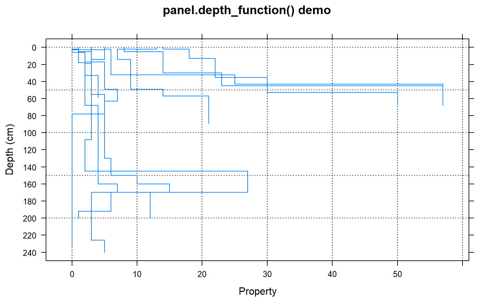
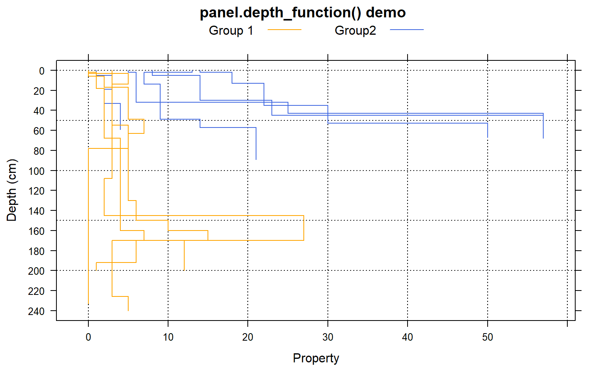

panel.depth_function.RdPanel function for plotting grouped soil property data, along with upper and lower estimates of uncertainty.
panel.depth_function(x, y, id, upper = NA, lower = NA, subscripts = NULL, groups = NULL, sync.colors=FALSE, cf=NA, cf.col=NA, cf.interval=20, ...)
| x | x values (generated by calling lattice function) |
|---|---|
| y | y values (generated by calling lattice function) |
| id | vector of id labels, same length as x and y--only required when plotting segments (see Details section) |
| upper | vector of upper confidence envelope values |
| lower | vector of lower confidence envelope values |
| subscripts | paneling indices (generated by calling lattice function) |
| groups | grouping data (generated by calling lattice function) |
| sync.colors | optionally sync the fill color within the region bounded by (lower--upper) with the line colors |
| cf | optionally annotate contributing fraction data at regular depth intervals see |
| cf.col | optionall color for contributing fraction values, typically used to override the line color |
| cf.interval | number of depth units to space printed contributing fraction values |
| ... | further arguments to lower-level lattice plotting functions, see below |
This function can be used to replace panel.superpose when plotting depth function data. When requested, contributing fraction data are printed using colors the same color as corresponding depth function lines unless a single color value is given via cf.col.
http://casoilresource.lawr.ucdavis.edu/
library(lattice) data(sp1) # 1. plotting mechanism for step-functions derived from soil profile data xyplot(cbind(top,bottom) ~ prop, data=sp1,id=sp1$id, panel=panel.depth_function, ylim=c(250,-10), scales=list(y=list(tick.number=10)), xlab='Property', ylab='Depth (cm)', main='panel.depth_function() demo' )#># 1.1 include groups argument to leverage lattice styling framework sp1$group <- factor(sp1$group, labels=c('Group 1', 'Group2')) xyplot(cbind(top,bottom) ~ prop, groups=group, data=sp1, id=sp1$id, panel=panel.depth_function, ylim=c(250,-10), scales=list(y=list(tick.number=10)), xlab='Property', ylab='Depth (cm)', main='panel.depth_function() demo', auto.key=list(columns=2, points=FALSE, lines=TRUE), par.settings=list(superpose.line=list(col=c('Orange','RoyalBlue'))) )#>